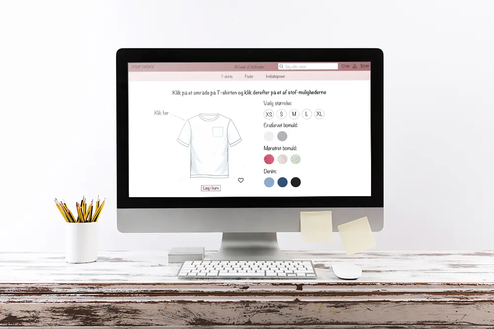
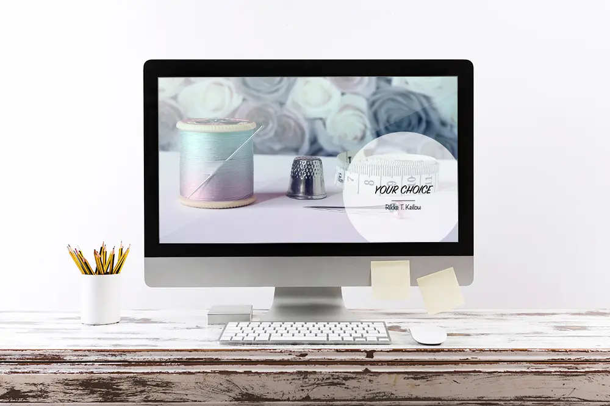

I dette tema skulle vi, ved hjælp af Adobe XD, udarbejde en prototype 1 og en prototype 2, af en hjemmeside, som solgte t-shirts. Vi lærte om en masse forskellige former for research, som
Desk research, interview research, survey research og tænke-højt-test. Vi brugte disse former for research, for at finde ud af, om der var andre virksomheder med lignende koncept, om det
var noget folk var interesseret i, og om hjemmesiden var til at navigere rundt i og til at forstå.
Til opgaven UX pitch deck, blev vi bl.a. introduceret til testmetoden tænke-højt-test, som vi i grupper udførte på hinandens Prototype 1.
Jeg fik bl.a. tilbagemeldinger om, at ingen læste min overskrift på siden, hvor man vælger stoffet til sin t-shirt. Derfor vidste jeg, at der skulle ændres noget omkring overskriften til
Prototype 2.
Nedenfor på første billede, ses min Prototype 1 og på andet billede ses min Prototype 2.
Til højre ses mit moodboard og mit første uddrag af, hvordan hjemmesidens forside skulle se ud.
Se min Prototype 2 her:

UX Pitch Deck var en fremlæggelse, som vi skulle lave, ud fra den research, som vi havde lavet og de valg vi havde taget ud fra den.
Pitchen skulle indholde en udfordring, informationer og indsigter, en løsning, som var vores XD-prototype, og til sidst reflektioner og fremtidsperspektiver. Dette gjorde jeg ved at
forklare om mit koncept, min research og fortælle lidt om konkurrenterne. Dernæst viste jeg min prototype og til sidst fortalte jeg, hvad jeg havde lavet af ændringer siden Prototype 1, og
hvad der kunne laves om til en evt. Prototype 3.
Til højre ses min præsentation.

Se min præsentation her:
